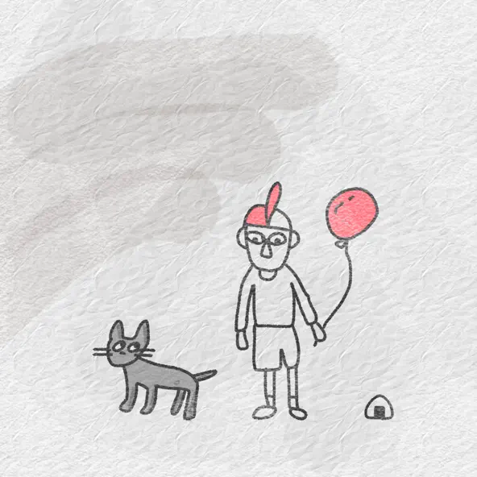
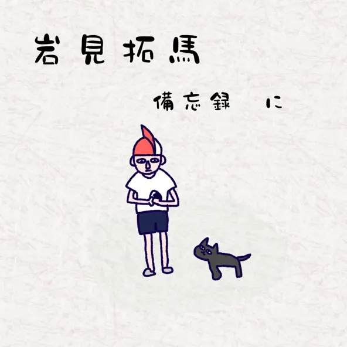
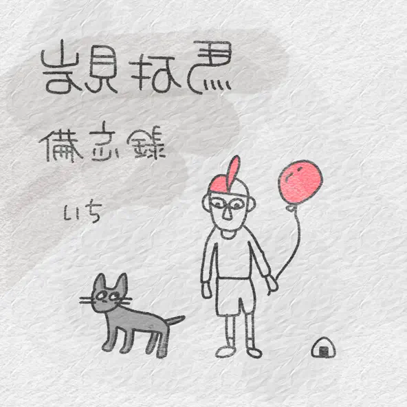

月がきれい
さよならはよそう
どちらも恋人を想って歌っている曲です。心地の良いギターの音色と優しい歌声が、夜一人で帰る私の胸に刺さります。色々思い出します。
勇魚
夢のあと
勇魚に話しかけているような歌詞です。人に言えない相談事を勇魚に言っているのかな。 夢のあとは恋愛曲です。少し大人な感じの歌詞です。

わすれる
恋愛曲です。恋人と喧嘩した時に聞くとなんか刺さります。一緒にいれることは当たり前じゃないことを改めて感じさせてくれます。

言葉より欲しいものがある
奏え
どちらも恋愛曲です。言葉なんて思っていなくても言える時があります。言葉だけじゃなくて行動で示してほしい。そんな時に聞くと泣きます。 奏えは、毎日がどんな状態でも愛することが大切だということを感じさせてくれます。

友達だって言ったろ
すごくすごく短い曲で、だけど短い時間に友達への思いがぎゅっと込められています。通常の曲と同じくらい。